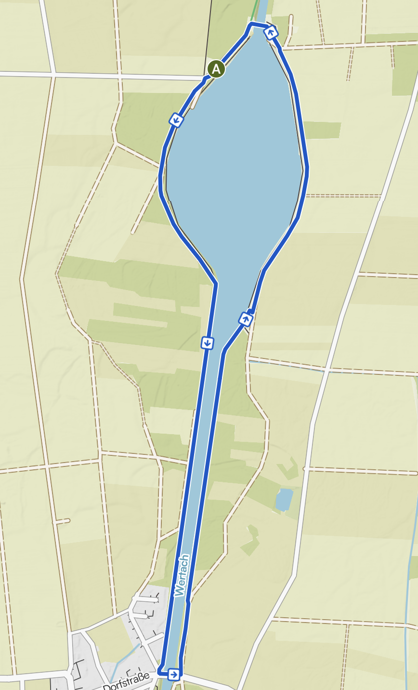
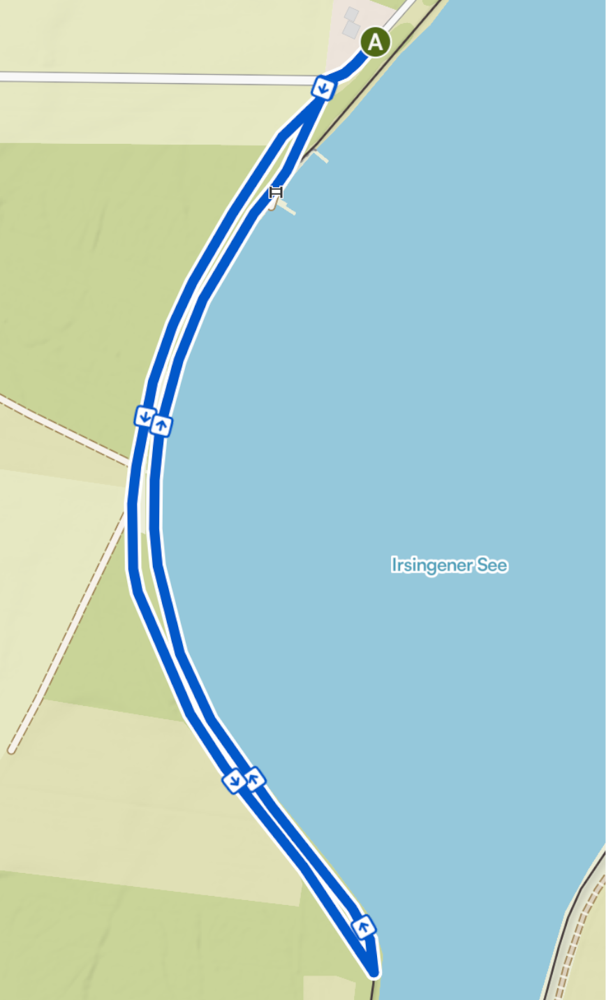

Start und Ziel direkt am Seglerheim am Stausee. Die flache, naturnahe Strecke führt auf Feld- und Wiesenwegen mit Blick auf das Wasser – ein landschaftlich wunderschöner Lauf in entspannter Atmosphäre.
Im Zielbereich erwartet euch Musik, Moderation und eine tolle Stimmung.

5,3 km & 10,6 km
1 oder 2 Runden um den See – Start 18:00 Uhr

Schülerlauf 1,8 km
Direkt am Seeufer – Start 17:30 Uhr